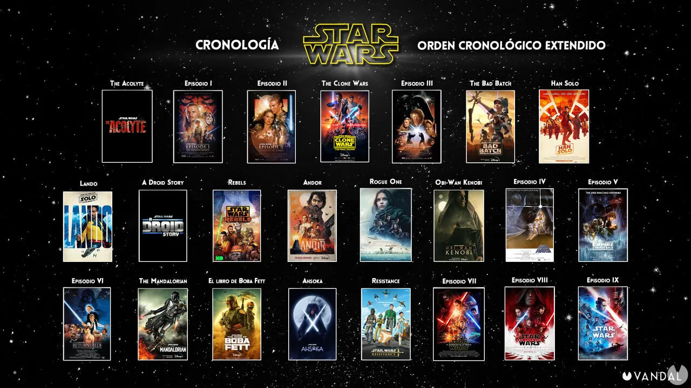

Aquí tienes el orden cronológico de la saga principal de "Star Wars", incluyendo las películas de las tres trilogías y algunas películas independientes. Ten en cuenta que este orden también incluye las series de televisión relevantes para la cronología:
- Episodio I: La Amenaza Fantasma (Película - 1999)
- Episodio II: El Ataque de los Clones (Película - 2002)
- Star Wars: The Clone Wars (Serie de televisión - 2008-2020)
- Episodio III: La Venganza de los Sith (Película - 2005)
- Star Wars: Obi-Wan Kenobi (Serie de televisión, próximamente)
- Star Wars: Andor (Serie de televisión, próximamente)
- Star Wars: Lando (Serie de televisión, próximamente)
- Star Wars: The Bad Batch (Serie de televisión - 2021-presente)
- Star Wars: Rebels (Serie de televisión - 2014-2018)
- Rogue One: Una Historia de Star Wars (Película - 2016)
- Episodio IV: Una Nueva Esperanza (Película - 1977)
- Episodio V: El Imperio Contraataca (Película - 1980)
- Episodio VI: El Retorno del Jedi (Película - 1983)
- The Mandalorian (Serie de televisión - 2019-presente)
- Star Wars: The Book of Boba Fett (Serie de televisión, próximamente)
- Episodio VII: El Despertar de la Fuerza (Película - 2015)
- Episodio VIII: Los Últimos Jedi (Película - 2017)
- Episodio IX: El Ascenso de Skywalker (Película - 2019)
Ten en cuenta que esta lista incluye tanto las películas como las series de televisión relevantes para la cronología de "Star Wars". La franquicia sigue expandiéndose, por lo que es posible que haya más adiciones en el futuro.
